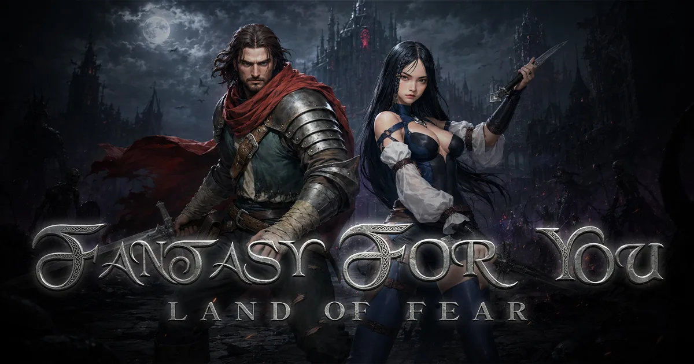

지앤아이소프트 · 2026.11.10 정식 출시 · 사전예약 중
판타지포유 원격 임대
| 개발·서비스 | 지앤아이소프트(GNISoft) |
|---|---|
| 원작 | 1999년 국내 서비스를 시작한 PC 온라인 게임 '판타지포유' |
| 장르 | 2D 클래식 다크 판타지 MMORPG |
| 정식 출시 | 2026년 11월 10일(화) 낮 12시 |
| 사전 다운로드 | 2026년 11월 9일(월) 0시부터 각 스토어에서 순차 제공 |
| 플랫폼 | PC(Steam) · 모바일(Google Play · App Store · 원스토어 · 갤럭시 스토어) 크로스 플랫폼 |
| 종족·혈통 | 3개 종족 · 20개 혈통 |
| 핵심 시스템 | 랜덤 스킬 · 수분(수통·우물) · 바락전(필드 길드전) |
| 공식 자동 사냥 | 공식 안내 미확인 — 출시 후 공지 확인 |
판타지포유(Fantasy For You, F4U, 판포유)는 지앤아이소프트가 1999년 국내 서비스를 시작한 동명의 PC 온라인 게임을 되살린 2D 클래식 다크 판타지 MMORPG로, 2026년 11월 10일 낮 12시 정식 출시를 앞두고 있습니다. 20개 혈통 중 하나를 고르고, 전투 중 무작위로 발동하는 랜덤 스킬과 한정된 우물을 차지하려는 경쟁이 특징입니다.
PC와 모바일 크로스 플랫폼으로 출시되며 PC 버전은 Steam에 등록돼 있습니다. 원격PC에 PC 버전을 설치해 두면 휴대폰으로 상태만 확인하면서 접속을 이어갈 수 있고, 물약 대신 수분 시스템으로 운영되는 게임이라 원격 앱으로 수시로 상태를 확인할 수 있으면 편합니다.

물약이 없고 수분 관리가 필요해요판타지포유는 체력 회복 물약 대신 수분 수치(충만→쾌적→건조→탈진)를 관리하는 방식입니다. 수분이 내려갈수록 자연 회복률이 떨어지고 탈진 단계에서는 거의 회복되지 않으며, 수통과 우물로 회복합니다. 우물은 오염될 수 있어 오염된 우물을 쓰면 중독되니, 장시간 접속을 유지할 때는 사냥터와 수분 상태를 수시로 확인해 주세요.
판타지포유를 원격PC로 즐길 때 알아둘 점
- PC 버전은 Steam, 사양도 공개 — Steam 안내 기준 최소 사양은 Core i5-3570·RAM 8GB·GTX 750 Ti 2GB, 권장 사양은 Core i5-8400·RAM 16GB·GTX 1060급 6GB입니다. 원격임대 전 옵션이 RAM 기준은 넘고, 그래픽카드 기준은 외장 그래픽 옵션이 맞습니다.
- 랜덤 스킬 전투 — 전사·궁수는 기본 공격 때 등록한 스킬이 확률에 따라 자동 발동하고, 확률은 스킬마다 다르며 숙련도가 오르면 함께 올라갑니다. 마법 계열은 마법과 패시브 중심으로, 혈통에 따라 전투 방식이 달라집니다.
- 수분·우물 시스템 — 수분 수치가 4단계로 변하고 수통·우물로 회복하는 구조라, 좋은 사냥터를 차지하려는 우물 경쟁이 생깁니다. 원격 앱으로 상태를 수시로 확인할 수 있으면 편합니다.
- 바락전(필드 길드전) — 인스턴스 맵이 아닌 일반 필드에서 열리는 길드 RvR입니다. 승리한 길드는 해당 필드의 바락 소유권과 필드 골드 세금 일부를 얻고, 연속 수성에 성공하면 바락 레벨과 세율이 올라갑니다. 길드원과 함께하는 콘텐츠라 필요할 때 바로 접속할 수 있는 원격PC가 편합니다.
- PC·모바일 크로스 플랫폼 — PC와 모바일을 모두 지원하는 크로스 플랫폼으로 출시됩니다. 원격PC에서는 PC 버전을 실행하고, 내 휴대폰은 원격 접속 앱으로 상태 확인에 쓰는 식으로 나눠 쓸 수 있습니다.
- 출시 직후 재고 확인 — 사전 다운로드는 11월 9일 0시부터, 정식 출시는 11월 10일 낮 12시입니다. 닉네임 선점과 길드 사전 생성·가입은 11월 9일 0시부터 10일 오전 11시까지 열립니다. 신작 출시 직후에는 임대 재고가 빨리 줄 수 있으니, 홈페이지 '임대 옵션'에서 임대 가능 대수를 미리 확인해 두세요.
판타지포유 PC 사양 (Steam 안내 기준)
| 항목 | 최소 | 권장 |
|---|---|---|
| 운영체제 | Windows 10 | Windows 10 |
| CPU | Intel Core i5-3570 | Intel Core i5-8400 |
| RAM | 8GB | 16GB |
| GPU | GTX 750 Ti 2GB | GTX 1060 Ti 6G (Steam 표기) |
| DirectX | 11 | 11 |
| 저장공간 | 5GB | 16GB |
| 네트워크 | 광대역 인터넷 | 광대역 인터넷 |
Steam 스토어 페이지(출시 예정) 안내 기준 · 모바일 사양은 각 스토어 공지 확인
판타지포유 추천 임대 옵션
라이젠 2600
6코어 12쓰레드 · RAM 24GB · 외장 그래픽카드
단독 고사양6코어 12쓰레드 · RAM 24GB · 외장 그래픽카드
라이젠 5700G
8코어 16쓰레드 · RAM 32GB · 내장 Vega 8
BEST · 다중8코어 16쓰레드 · RAM 32GB · 내장 Vega 8
Steam 안내 기준 최소 GPU가 GTX 750 Ti급, 권장이 GTX 1060급이라 공식 사양의 그래픽카드 기준을 맞추려면 외장 그래픽카드가 달린 라이젠 2600 옵션이 적합합니다. 내장 그래픽 옵션에서의 구동·그래픽 설정 가능 범위는 카카오톡으로 먼저 확인해 드립니다.
판타지포유 원격 임대 자주 묻는 질문
판타지포유는 어떤 게임인가요?
지앤아이소프트가 1999년 국내 서비스를 시작한 동명의 PC 온라인 게임을 되살린 2D 클래식 다크 판타지 MMORPG입니다. 3개 종족과 20개 혈통, 전투 중 무작위로 발동하는 랜덤 스킬, 수분(수통·우물) 시스템, 일반 필드에서 열리는 길드전 '바락전'이 특징입니다.
언제 출시되나요? 사전 다운로드는요?
정식 서비스는 2026년 11월 10일 낮 12시에 시작합니다. 사전 다운로드는 11월 9일 0시부터 각 스토어에서 순차 제공되고, 닉네임 선점과 길드 사전 생성·가입은 11월 9일 0시부터 11월 10일 오전 11시까지 가능합니다. 사전예약자는 30만 명을 넘었다고 발표됐습니다.
PC로 할 수 있나요? 원격PC에서는 어떻게 하나요?
PC와 모바일을 지원하는 크로스 플랫폼으로 출시되며, PC 버전은 Steam에 등록돼 있습니다. 원격PC에 Steam으로 설치해 접속하는 방식으로 이용하며, 설치와 로그인은 고객님이 직접 하시고 궁금한 점은 카카오톡으로 문의해 주세요.
PC 사양은 어느 정도 필요한가요?
Steam 안내 기준 최소 사양은 Core i5-3570, RAM 8GB, GTX 750 Ti 2GB, 저장공간 5GB이고 권장 사양은 Core i5-8400, RAM 16GB, GTX 1060급 6GB, 저장공간 16GB입니다. 그래픽카드 기준을 맞추려면 외장 그래픽 옵션(라이젠 2600)이 적합하고, 내장 그래픽 옵션의 구동 범위는 카카오톡으로 먼저 확인해 드립니다.
자동 사냥이 되나요?
공식 사이트와 스토어 안내에서 자동 사냥(오토) 기능은 확인되지 않았습니다. 전사·궁수가 기본 공격 때 등록한 스킬이 확률로 발동하는 '랜덤 스킬'은 전투 시스템이며 자동 사냥과는 다릅니다. 자동 사냥 여부와 규정은 출시 후 공식 공지를 확인해 안내해 드리고, 외부 자동화 프로그램은 지원하지 않습니다.
물약이 없다는데 24시간 켜 두면 어떻게 되나요?
판타지포유는 체력 회복 물약 대신 수분 수치를 관리하는 방식이고, 수분이 내려갈수록 자연 회복이 떨어져 탈진 단계에서는 거의 회복되지 않습니다. 수통과 우물로 회복해야 하므로 장시간 접속을 유지할 때도 사냥터와 수분 상태를 확인해야 합니다. 원격 앱으로 수시로 들어가 상태를 확인하실 수 있습니다.
여러 계정이나 다중 클라이언트가 가능한가요?
다중 클라이언트 허용 여부와 제한은 아직 공식 안내가 확인되지 않았습니다. 출시 후 공지를 확인해 허용 범위 안에서만 안내해 드리고, 계정 수를 알려주시면 그에 맞는 옵션을 먼저 상담해 드립니다.
출시 직후에도 바로 빌릴 수 있나요?
홈페이지 '임대 옵션'의 임대 가능 대수에서 실시간으로 확인하실 수 있습니다. 신작 출시 직후에는 재고가 빨리 줄 수 있으니 미리 확인해 보시길 권합니다.